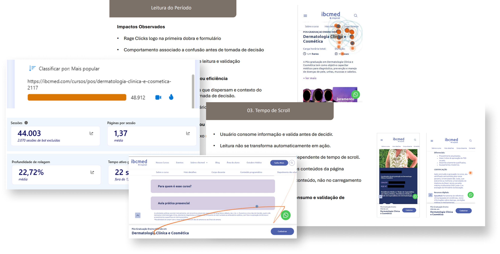
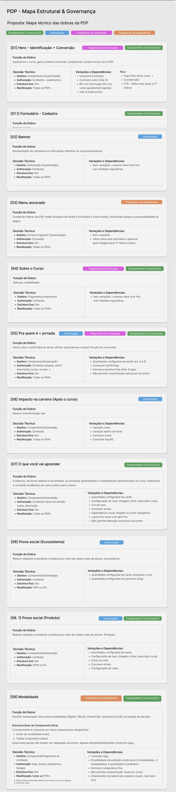
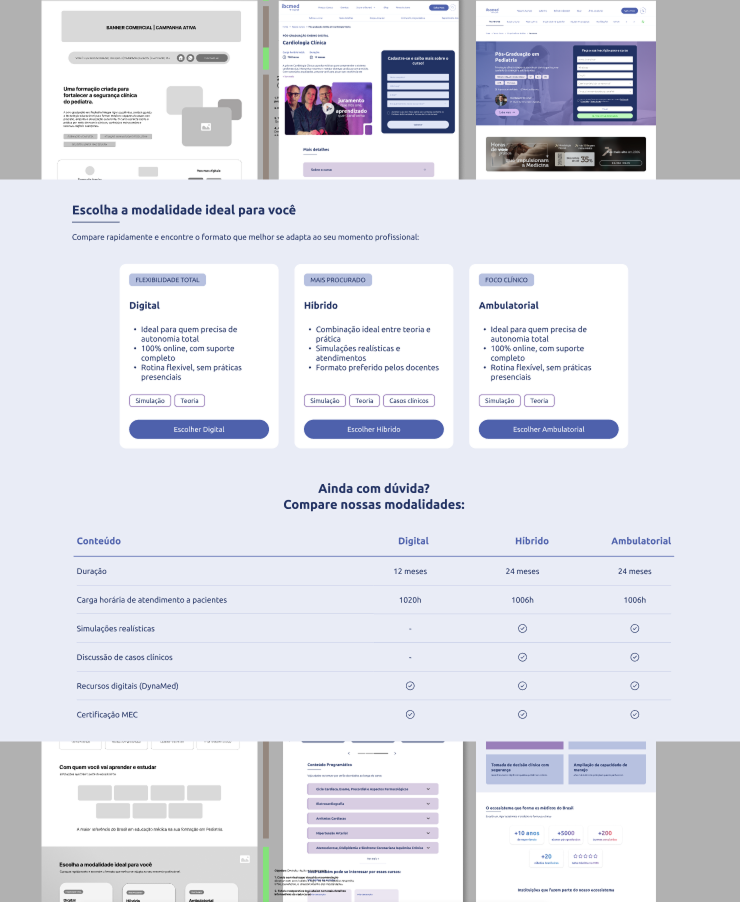

A página de decisão da jornada
A página de produto (PDP) dos cursos de pós-graduação do IBCMED (Inspirali Pós) é a página de decisão da jornada: o usuário já passou da curiosidade genérica e está avaliando valor, reduzindo risco e buscando clareza antes de agir. Seu objetivo é gerar leads qualificados — a conversão principal é o envio do formulário de interesse.
A PDP existente era genérica e idêntica para todos os cursos. Dois problemas estruturais a limitavam: cada modalidade de uma mesma especialização (híbrido, presencial, online) gerava uma página separada, multiplicando o número de PDPs no site e poluindo a própria vitrine; e o conteúdo era apresentado em formato sanfona, obrigando o usuário a uma sequência de cliques para acessar informação essencial à decisão. A leitura de performance, ainda assim, não explicava por que a conversão não acompanhava o tráfego.
03 — ProblemaTráfego relevante, conversão que não corresponde
A página recebia tráfego relevante, mas a conversão não correspondia. Faltava entender o comportamento real antes de mexer no layout — havia esforço sendo investido sem impacto mensurável, com hipóteses baseadas em suposição, não em evidência.
04 — Meu papelDo diagnóstico comportamental ao handoff com tech
Conduzi o diagnóstico comportamental e o discovery da nova PDP, e atuei como ponte com os times de produto e tecnologia no handoff e na otimização dos componentes:
- Análise comportamental via Microsoft Clarity (90 dias, mobile e desktop).
- Diagnóstico de padrões de navegação, scroll, cliques e fricções (rage e dead clicks).
- Discovery e estruturação da nova PDP, do mapa de objeções ao user flow.
- Handoff e acompanhamento da execução com produto e tecnologia, otimizando os componentes.
- Implementação de parte das mudanças diretamente no AEM.
Separar validação de ação para achar o gargalo real
- DiagnósticoAnálise comportamental no Clarity
- ReposicionamentoO problema certo: validação → ação
- RedesignDiscovery e mapa de governança
- ProduçãoImplementação no AEM
Diagnóstico com critério. A análise no Clarity seguiu critérios para evitar conclusão por caso isolado: analisar múltiplas sessões, diagnosticar padrões e não exceções, separar mobile de desktop e isolar a página específica. O recorte foi feito sobre o curso de maior tráfego, em sessões curtas, médias e longas, com e sem clique.
Separação entre validação e ação. O ponto-chave do diagnóstico foi tratar scroll e leitura como microconversões reais — sinais de validação — e separá-los da ação final (envio do formulário). Isso revelou dois perfis de comportamento recorrentes:
Já decidido
- Vai direto ao formulário, pouco scroll, conversão cedo.
- O site apenas executa uma decisão tomada fora dele.
Em validação
- Lê bastante, scroll consistente, pausas longas em “para quem é o curso”, “aulas práticas” e “corpo docente”.
- Usa o site para decidir se o curso é para ele.
O insight central. O CTA não era o gatilho de decisão — funcionava como mecanismo final de execução para quem já estava decidido. A conversão era resultado de confiança construída ao longo da navegação, não de estímulo isolado. O formulário não era o problema e o CTA não era confuso: depois de consumir o conteúdo de validação, o usuário não recebia orientação explícita do próximo passo — e era nessa transição, não no botão, que a conversão se perdia.

Do diagnóstico ao redesign. O discovery da nova PDP partiu desse diagnóstico — mapa de objeções, user flow e estrutura final — e resultou em um mapa de governança de componentes que define cada dobra da página (função, autoração, estrutura fixa e reutilização entre PDPs). A nova estrutura resolveu os dois gargalos de origem: consolidou as modalidades de uma especialização em uma página única, eliminando a multiplicação de PDPs, e abandonou a sanfona em favor de um conteúdo mais direto e escaneável, alinhado ao SEO técnico e à estrutura do design system existente.
06 — Decisões principaisAs escolhas que guiaram o redesign
Diagnosticar antes de redesenhar
Análise comportamental (Clarity) antes de qualquer mudança de layout — decisão por evidência, não por suposição.
Consolidar modalidades em uma PDP única
Uma página por especialização, com as variações (híbrido, presencial, online) dentro dela — menos PDPs no site, vitrine limpa, governança e manutenção mais simples.
Reduzir a fricção da sanfona
Entregar o conteúdo de validação de forma direta e escaneável, sem a sequência de cliques que a sanfona exigia.
Scroll e leitura como microconversões
Medir validação, não só a conversão final, para entender onde a jornada realmente quebrava.
Contexto ao CTA após a validação
Reduzir a hesitação conduzindo o usuário do “entendi” para o “quero fazer”.
PDP como sistema de componentes
Sair de uma página genérica para um mapa de governança que define cada dobra, reutilizável entre cursos.
O que ficou de concreto
Análise comportamental (Clarity, 90 dias)
Separando validação de ação e identificando os perfis de usuário.
Diagnóstico priorizado
Os pontos de maior impacto na conversão.
Discovery da nova PDP
Mapa de objeções, user flow e estrutura final.
Mapa de governança de componentes
Define função, autoração e reutilização de cada dobra da PDP.
Handoff com produto e tecnologia
Acompanhamento da execução com os times.

Stack do case
09 — ImpactoDo “o CTA não converte” ao problema certo
O impacto foi qualitativo e de processo:
- A decisão de redesign passou a ser orientada por evidência comportamental, não por suposição.
- O diagnóstico reposicionou o problema: deixou de ser “o CTA não converte” e passou a ser “falta transição entre validação e ação” — um problema diferente, que muda o que se constrói.
- A PDP saiu de uma página genérica para uma estrutura de componentes governada e reutilizável entre cursos, com as modalidades consolidadas em uma única página.
- A proposta de redesign foi aprovada de primeira pela diretoria.
- O redesign foi implementado em produção, com parte das implementações feitas diretamente por mim no AEM.

O redesign foi implementado em produção; a mensuração de conversão pós-implementação seguiu com o time.
Diagnóstico completo, artefatos de discovery e mapa de governança apresentados sob solicitação.
10 — AprendizadosO que ficou
- Entender o comportamento antes de mexer no layout evita otimizar o elemento errado: o formulário e o CTA não eram o problema.
- Microconversões (scroll, leitura) contam a história que a taxa de conversão final esconde.
- O papel mais valioso não foi desenhar a tela, mas traduzir dado de comportamento em decisão de produto e levá-la à execução com tech.
Evolução possível
Continuidade projetada.
- Mensurar a conversão da nova PDP em produção, validando a hipótese de que o fluxo mais longo, porém mais qualificado, melhora a qualidade do lead.
- Refinar os breakpoints de desktop, identificados como o principal risco técnico remanescente.